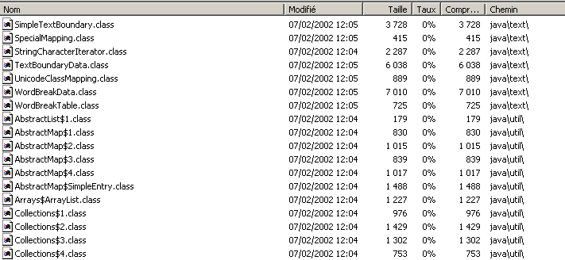

3. Classes e interfaces
3.1. O objeto através do exemplo
3.1.1. Noções gerais
Vamos agora abordar, através de exemplos, a programação orientada a objetos. Um objeto é uma entidade que contém dados que definem o seu estado (chamados de atributos ou propriedades) e funções (chamadas de métodos). Um objeto é criado de acordo com um modelo chamado de classe:
public class C1{
type1 p1; // propriedade p1
type2 p2; // propriedade p2
…
type3 m3(…){ // método m3
…
}
type4 m4(…){ // método m4
…
}
…
}
A partir da classe anterior C1, é possível criar vários objetos O1, O2,… Todos terão as propriedades p1, p2, … e os métodos m3, m4, … Terão valores diferentes para as suas propriedades pi, tendo assim cada um um estado que lhes é próprio.
Se O1 for um objeto do tipo C1, O1.p1 designa a propriedade p1 de O1 e O1.m1 o método m1 de O1.
Consideremos um primeiro modelo de objeto: a classe personne.
3.1.2. Definição da classe «pessoa»
A definição da classe personne será a seguinte:
import java.io.*;
public class personne{
// atributos
private String prenom;
private String nom;
private int age;
// método
public void initialise(String P, String N, int age){
this.prenom=P;
this.nom=N;
this.age=age;
}
// método
public void identifie(){
System.out.println(prenom+","+nom+","+age);
}
}
Temos aqui a definição de uma classe, ou seja, um tipo de dados. Quando criarmos variáveis deste tipo, chamar-lhes-emos objetos. Uma classe é, portanto, um molde a partir do qual são construídos os objetos.
Os membros ou campos de uma classe podem ser dados ou métodos (funções). Estes campos podem ter um dos três atributos seguintes:
privé: Um campo privado (private) só é acessível pelos métodos internos da classe
public: Um campo público é acessível por qualquer função, definida ou não no âmbito da classe
protégé: Um campo protegido (protected) só é acessível pelos métodos internos da classe ou de um objeto derivado (ver mais adiante o conceito de herança).
Em geral, os dados de uma classe são declarados privados, enquanto os seus métodos são declarados públicos. Isto significa que o utilizador de um objeto (o programador)
a: não terá acesso direto aos dados privados do objeto
b: poderá recorrer aos métodos públicos do objeto e, nomeadamente, àqueles que dão acesso aos seus dados privados.
A sintaxe de declaração de um objeto é a seguinte:
public class nomClasse{
private donnée ou méthode privée
public donnée ou méthode publique
protected donnée ou méthode protégée
}
Remarques
- A ordem de declaração dos atributos private, protected e public é arbitrária.
3.1.3. O método inicializa
Voltemos à nossa classe «pessoa», declarada da seguinte forma:
import java.io.*;
public class personne{
// atributos
private String prenom;
private String nom;
private int age;
// método
public void initialise(String P, String N, int age){
this.prenom=P;
this.nom=N;
this.age=age;
}
// método
public void identifie(){
System.out.println(prenom+","+nom+","+age);
}
}
Qual é a função do método initialise? Como o apelido, o nome próprio e a idade são dados privados da classe «pessoa», as instruções
são ilegais. Temos de inicializar um objeto do tipo personne através de um método público. É essa a função do método initialise. Escreveremos:
A sintaxe p1.initialise é válida, uma vez que initialise é de acesso público.
3.1.4. O operador «new»
A sequência de instruções
está incorreta. A instrução
declara p1 como uma referência a um objeto do tipo personne. Esse objeto ainda não existe e, por isso, p1 não está inicializado. É como se escrevêssemos:
onde se indica explicitamente, com a palavra-chave null, que a variável p1 ainda não faz referência a nenhum objeto.
Quando, em seguida, escrevemos
estamos a chamar o método initialise do objeto referenciado por p1. No entanto, esse objeto ainda não existe e o compilador irá sinalizar o erro. Para que p1 refira um objeto, é necessário escrever:
Isto tem como efeito a criação de um objeto do tipo personne ainda não inicializado: os atributos nom e prenom, que são referências a objetos do tipo String, terão o valor null, e age terá o valor 0. Existe, portanto, uma inicialização por predefinição. Agora que p1 faz referência a um objeto, a instrução de inicialização desse objeto
é válida.
3.1.5. A palavra-chave «this»
Vejamos o código do método initialise:
public void initialise(String P, String N, int age){
this.prenom=P;
this.nom=N;
this.age=age;
}
A instrução this.prenom=P significa que o atributo prenom do objeto atual (this) recebe o valor P. A palavra-chave this designa o objeto atual: aquele no qual se encontra o método executado. Como é que o sabemos? Vejamos como se realiza a inicialização do objeto referenciado por p1 no programa chamador:
É o método initialise do objeto p1 que é chamado. Quando, neste método, se faz referência ao objeto this, está-se, na verdade, a fazer referência ao objeto p1. O método initialise também poderia ter sido escrito da seguinte forma:
public void initialise(String P, String N, int age){
prenom=P;
nom=N;
this.age=age;
}
Quando um método de um objeto faz referência a um atributo A desse objeto, a notação this.A é implícita. Deve ser utilizada explicitamente quando existe um conflito de identificadores. É o caso da instrução:
this.age=age;
onde age designa um atributo do objeto atual, bem como o parâmetro age recebido pelo método. É então necessário eliminar a ambiguidade, designando o atributo age como this.age.
3.1.6. Um programa de teste
Eis um programa de teste:
public class test1{
public static void main(String arg[]){
personne p1=new personne();
p1.initialise("Jean","Dupont",30);
p1.identifie();
}
}
A classe personne está definida no ficheiro fonte personne.java e é compilada:
E:\data\serge\JAVA\BASES\OBJETS\2>javac personne.java
E:\data\serge\JAVA\BASES\OBJETS\2>dir
10/06/2002 09:21 473 personne.java
10/06/2002 09:22 835 personne.class
10/06/2002 09:23 165 test1.java
Fazemos o mesmo para o programa de teste:
E:\data\serge\JAVA\BASES\OBJETS\2>javac test1.java
E:\data\serge\JAVA\BASES\OBJETS\2>dir
10/06/2002 09:21 473 personne.java
10/06/2002 09:22 835 personne.class
10/06/2002 09:23 165 test1.java
10/06/2002 09:25 418 test1.class
Pode ser surpreendente que o programa test1.java não importe a classe personne com uma instrução:
Quando o compilador encontra no código-fonte uma referência a uma classe não definida nesse mesmo ficheiro-fonte, procura a classe em vários locais:
- nos pacotes importados pelas instruções import
- no diretório a partir do qual o compilador foi iniciado
No nosso exemplo, o compilador foi iniciado a partir do diretório que contém o ficheiro personne.class, o que explica por que razão encontrou a definição da classe personne. Nesta situação, inserir uma instrução import provoca um erro de compilação:
E:\data\serge\JAVA\BASES\OBJETS\2>javac test1.java
test1.java:1: '.' expected
import personne;
^
1 error
Para evitar este erro, mas para lembrar que a classe «pessoa» deve ser importada, passaremos a escrever no início do programa:
Podemos agora executar o ficheiro test1.class:
É possível agrupar várias classes num único ficheiro de origem. Vamos, assim, agrupar as classes personne e test1 no ficheiro de origem test2.java. A classe test1 é renomeada para test2 para ter em conta a alteração do nome do ficheiro fonte:
// pacotes importados
import java.io.*;
class personne{
// atributos
private String prenom; // nome próprio da minha pessoa
private String nom; // o seu apelido
private int age; // a idade dela
// método
public void initialise(String P, String N, int age){
this.prenom=P;
this.nom=N;
this.age=age;
}//inicializa
// método
public void identifie(){
System.out.println(prenom+","+nom+","+age);
}//identifica
}//classe
public class test2{
public static void main(String arg[]){
personne p1=new personne();
p1.initialise("Jean","Dupont",30);
p1.identifie();
}
}
Note-se que a classe personne já não possui o atributo public. De facto, num ficheiro fonte Java, apenas uma classe pode ter o atributo public. É aquela que possui a função main. Além disso, o ficheiro fonte deve ter o nome desta última. Vamos compilar o ficheiro test2.java:
E:\data\serge\JAVA\BASES\OBJETS\3>dir
10/06/2002 09:36 633 test2.java
E:\data\serge\JAVA\BASES\OBJETS\3>javac test2.java
E:\data\serge\JAVA\BASES\OBJETS\3>dir
10/06/2002 09:36 633 test2.java
10/06/2002 09:41 832 personne.class
10/06/2002 09:41 418 test2.class
Note-se que foi gerado um ficheiro .class para cada uma das classes presentes no ficheiro fonte. Vamos agora executar o ficheiro test2.class:
Posteriormente, utilizaremos indistintamente os dois métodos:
- classes agrupadas num único ficheiro-fonte
- uma classe por ficheiro-fonte
3.1.7. Outro método de inicialização
Consideremos novamente a classe personne e adicionemos-lhe o seguinte método:
public void initialise(personne P){
prenom=P.prenom;
nom=P.nom;
this.age=P.age;
}
Temos agora dois métodos com o nome initialise: isso é válido desde que aceitem parâmetros diferentes. É o que acontece neste caso. O parâmetro é agora uma referência P a uma pessoa. Os atributos da pessoa P são então atribuídos ao objeto atual (this). Note-se que o método initialise tem acesso direto aos atributos do objeto P, embora estes sejam do tipo private. Isto é sempre verdade: os métodos de um objeto O1 de uma classe C têm sempre acesso aos atributos privados dos outros objetos da mesma classe C.
Eis um teste da nova classe personne:
// importar pessoa;
import java.io.*;
public class test1{
public static void main(String arg[]){
personne p1=new personne();
p1.initialise("Jean","Dupont",30);
System.out.print("p1=");
p1.identifie();
personne p2=new personne();
p2.initialise(p1);
System.out.print("p2=");
p2.identifie();
}
}
e os seus resultados:
3.1.8. Construtores da classe Pessoa
Um construtor é um método que tem o nome da classe e que é chamado aquando da criação do objeto. É geralmente utilizado para o inicializar. Trata-se de um método que pode aceitar argumentos, mas que não devolve qualquer resultado. O seu protótipo ou definição não é precedido por nenhum tipo (nem mesmo void).
Se uma classe tiver um construtor que aceite n argumentos argi, a declaração e a inicialização de um objeto dessa classe poderão ser feitas da seguinte forma:
classe objet =new classe(arg1,arg2, ... argn);
ou
classe objet;
…
objet=new classe(arg1,arg2, ... argn);
Quando uma classe tem um ou mais construtores, um desses construtores deve ser obrigatoriamente utilizado para criar um objeto dessa classe. Se uma classe C não tiver nenhum construtor, dispõe de um construtor por predefinição, que é o construtor sem parâmetros: public C(). Os atributos do objeto são então inicializados com valores por predefinição. Foi isso que aconteceu quando, nos programas anteriores, escrevemos:
Vamos criar dois construtores para a nossa classe personne:
public class personne{
// atributos
private String prenom;
private String nom;
private int age;
// construtores
public personne(String P, String N, int age){
initialise(P,N,age);
}
public personne(personne P){
initialise(P);
}
// método
public void initialise(String P, String N, int age){
this.prenom=P;
this.nom=N;
this.age=age;
}
public void initialise(personne P){
this.prenom=P.prenom;
this.nom=P.nom;
this.age=P.age;
}
// método
public void identifie(){
System.out.println(prenom+","+nom+","+age);
}
}
Os nossos dois construtores limitam-se a recorrer aos métodos initialise correspondentes. Recorde-se que, quando num construtor se encontra a notação initialise(P), por exemplo, o compilador traduz para this.initialise(P). No construtor, o método initialise é, portanto, chamado para trabalhar no objeto referenciado por this, ou seja, o objeto atual, aquele que está a ser construído.
Eis um programa de teste:
// importar pessoa;
import java.io.*;
public class test1{
public static void main(String arg[]){
personne p1=new personne("Jean","Dupont",30);
System.out.print("p1=");
p1.identifie();
personne p2=new personne(p1);
System.out.print("p2=");
p2.identifie();
}
}
e os resultados obtidos:
3.1.9. As referências dos objetos
Continuamos a utilizar a mesma classe personne. O programa de teste passa a ser o seguinte:
// import pessoa;
import java.io.*;
public class test1{
public static void main(String arg[]){
// p1
personne p1=new personne("Jean","Dupont",30);
System.out.print("p1="); p1.identifie();
// p2 faz referência ao mesmo objeto que p1
personne p2=p1;
System.out.print("p2="); p2.identifie();
// p3 refere-se a um objeto que será uma cópia do objeto a que p1 se refere
personne p3=new personne(p1);
System.out.print("p3="); p3.identifie();
// altera-se o estado do objeto referenciado por p1
p1.initialise("Micheline","Benoît",67);
System.out.print("p1="); p1.identifie();
// como p2 = p1, o objeto referenciado por p2 deve ter mudado de estado
System.out.print("p2="); p2.identifie();
// como p3 não aponta para o mesmo objeto que p1, o objeto a que p3 aponta não deve ter mudado
System.out.print("p3="); p3.identifie();
}
}
Os resultados obtidos são os seguintes:
p1=Jean,Dupont,30
p2=Jean,Dupont,30
p3=Jean,Dupont,30
p1=Micheline,Benoît,67
p2=Micheline,Benoît,67
p3=Jean,Dupont,30
Quando se declara a variável p1 através de
p1 faz referência ao objeto personne("Jean","Dupont",30), mas não é o próprio objeto. Em C, dir-se-ia que se trata de um ponteiro, c.a.d, para a morada do objeto criado. Se escrevermos em seguida:
Não é o objeto personne("Jean","Dupont",30) que é alterado, mas sim a referência p1 que muda de valor. O objeto pessoa("Jean", "Dupont", 30) será «perdido» se não for referenciado por nenhuma outra variável.
Quando se escreve:
inicializa-se o ponteiro p2: este «aponta» para o mesmo objeto (designa o mesmo objeto) que o ponteiro p1. Assim, se alterarmos o objeto «apontado» (ou referenciado) por p1, alteramos o objeto referenciado por p2.
Quando se escreve:
é criado um novo objeto, uma cópia do objeto referenciado por p1. Este novo objeto será referenciado por p3. Se se alterar o objeto «apontado» (ou referenciado) por p1, não se altera de forma alguma aquele referenciado por p3. É isso que mostram os resultados obtidos.
3.1.10. Os objetos temporários
Numa expressão, é possível invocar explicitamente o construtor de um objeto: este é criado, mas não temos acesso a ele (para o modificar, por exemplo). Este objeto temporário é criado para efeitos de avaliação da expressão e, em seguida, descartado. O espaço de memória que ocupava será automaticamente recuperado posteriormente por um programa denominado «garbage collector», cuja função é recuperar o espaço de memória ocupado por objetos que já não são referenciados pelos dados do programa.
Consideremos o seguinte exemplo:
// import pessoa;
public class test1{
public static void main(String arg[]){
new personne(new personne("Jean","Dupont",30)).identifie();
}
}
e alteremos os construtores da classe personne para que apresentem uma mensagem:
// fabricantes
public personne(String P, String N, int age){
System.out.println("Constructeur personne(String, String, int)");
initialise(P,N,age);
}
public personne(personne P){
System.out.println("Constructeur personne(personne)");
initialise(P);
}
Obtenemos os seguintes resultados:
mostrando a construção sucessiva dos dois objetos temporários.
3.1.11. Métodos de leitura e gravação dos atributos privados
Adicionamos à classe personne os métodos necessários para ler ou alterar o estado dos atributos dos objetos:
public class personne{
private String prenom;
private String nom;
private int age;
public personne(String P, String N, int age){
this.prenom=P;
this.nom=N;
this.age=age;
}
public personne(personne P){
this.prenom=P.prenom;
this.nom=P.nom;
this.age=P.age;
}
public void identifie(){
System.out.println(prenom+","+nom+","+age);
}
// acessórios
public String getPrenom(){
return prenom;
}
public String getNom(){
return nom;
}
public int getAge(){
return age;
}
//modificadores
public void setPrenom(String P){
this.prenom=P;
}
public void setNom(String N){
this.nom=N;
}
public void setAge(int age){
this.age=age;
}
}
Estamos a testar a nova classe com o seguinte programa:
// importar pessoa;
public class test1{
public static void main(String[] arg){
personne P=new personne("Jean","Michelin",34);
System.out.println("P=("+P.getPrenom()+","+P.getNom()+","+P.getAge()+")");
P.setAge(56);
System.out.println("P=("+P.getPrenom()+","+P.getNom()+","+P.getAge()+")");
}
}
e obtemos os seguintes resultados:
3.1.12. Os métodos e atributos de classe
Suponhamos que se queira contar o número de objetos personne criados numa aplicação. Podemos gerir nós próprios um contador, mas corremos o risco de esquecer os objetos temporários que são criados aqui e ali. Pareceria mais seguro incluir nos construtores da classe personne uma instrução que incremente um contador. O problema é passar uma referência a esse contador para que o construtor o possa incrementar: é necessário passar-lhes um novo parâmetro. Também é possível incluir o contador na definição da classe. Como se trata de um atributo da própria classe e não de um objeto específico dessa classe, declara-se de forma diferente com a palavra-chave static:
Para o referenciar, escreve-se personne.nbPersonnes para indicar que se trata de um atributo da própria classe personne. Aqui, criámos um atributo privado ao qual não se terá acesso direto fora da classe. Criamos, portanto, um método público para dar acesso ao atributo da classe nbPersonnes. Para definir o valor de nbPersonnes, o método não necessita de um objeto específico: com efeito, nbPersonnes não é o atributo de um objeto específico, mas sim o atributo de toda uma classe. Por isso, é necessário um método de classe, também declarado como static:
que, externamente, será chamado com a sintaxe personne.getNbPersonnes(). Eis um exemplo.
A classe personne passa a ter a seguinte forma:
public class personne{
// atributo de classe
private static long nbPersonnes=0;
// atributos de objetos
…
// construtores
public personne(String P, String N, int age){
initialise(P,N,age);
nbPersonnes++;
}
public personne(personne P){
initialise(P);
nbPersonnes++;
}
// método
…
// método de classe
public static long getNbPersonnes(){
return nbPersonnes;
}
}// classe
Com o seguinte programa:
// import pessoa;
public class test1{
public static void main(String arg[]){
personne p1=new personne("Jean","Dupont",30);
personne p2=new personne(p1);
new personne(p1);
System.out.println("Nombre de personnes créées : "+personne.getNbPersonnes());
}// main
}//teste1
obtêm-se os seguintes resultados:
3.1.13. Passagem de um objeto para uma função
Já referimos que o Java passa os parâmetros efetivos de uma função por valor: os valores dos parâmetros efetivos são copiados para os parâmetros formais. Por conseguinte, uma função não pode alterar os parâmetros efetivos.
No caso de um objeto, não se deve deixar enganar pelo uso incorreto da linguagem que ocorre sistematicamente ao falar de «objeto» em vez de «referência de objeto». Um objeto só é manipulado através de uma referência (um ponteiro) a ele. O que é, portanto, transmitido a uma função não é o próprio objeto, mas uma referência a esse objeto. É, portanto, o valor da referência — e não o valor do próprio objeto — que é duplicado no parâmetro formal: não há criação de um novo objeto.
Se uma referência de objeto R1 for passada para uma função, será copiada para o parâmetro formal correspondente R2. Assim, as referências R2 e R1 designam o mesmo objeto. Se a função alterar o objeto apontado por R2, alterará, evidentemente, aquele referenciado por R1, uma vez que se trata do mesmo.

É isso que ilustra o exemplo seguinte:
// import pessoa;
public class test1{
public static void main(String arg[]){
personne p1=new personne("Jean","Dupont",30);
System.out.print("Paramètre effectif avant modification : ");
p1.identifie();
modifie(p1);
System.out.print("Paramètre effectif après modification : ");
p1.identifie();
}// main
private static void modifie(personne P){
System.out.print("Paramètre formel avant modification : ");
P.identifie();
P.initialise("Sylvie","Vartan",52);
System.out.print("Paramètre formel après modification : ");
P.identifie();
}// modifica
}// classe
O método modifie é declarado como static porque se trata de um método de classe: não é necessário prefixá-lo com um objeto para o chamar. Os resultados obtidos são os seguintes:
Constructeur personne(String, String, int)
Paramètre effectif avant modification : Jean,Dupont,30
Paramètre formel avant modification : Jean,Dupont,30
Paramètre formel après modification : Sylvie,Vartan,52
Paramètre effectif après modification : Sylvie,Vartan,52
Vê-se que apenas foi criado um objeto: o da pessoa p1 da função main e que o objeto foi efetivamente alterado pela função modifie.
3.1.14. Encapsular os parâmetros de saída de uma função num objeto
Devido à passagem de parâmetros por valor, não é possível escrever em Java uma função que tenha parâmetros de saída do tipo int, por exemplo, uma vez que não é possível passar a referência de um tipo int, que não é um objeto. É possível, então, criar uma classe que encapsule o tipo int:
public class entieres{
private int valeur;
public entieres(int valeur){
this.valeur=valeur;
}
public void setValue(int valeur){
this.valeur=valeur;
}
public int getValue(){
return valeur;
}
}
A classe anterior possui um construtor que permite inicializar um inteiro e dois métodos que permitem ler e alterar o valor desse inteiro. Testamos esta classe com o seguinte programa:
// import inteiros;
public class test2{
public static void main(String[] arg){
entieres I=new entieres(12);
System.out.println("I="+I.getValue());
change(I);
System.out.println("I="+I.getValue());
}
private static void change(entieres entier){
entier.setValue(15);
}
}
e obtêm-se os seguintes resultados:
3.1.15. Uma tabela de pessoas
Um objeto é um dado como qualquer outro e, como tal, vários objetos podem ser agrupados numa tabela:
// import pessoa;
public class test1{
public static void main(String arg[]){
personne[] amis=new personne[3];
System.out.println("----------------");
amis[0]=new personne("Jean","Dupont",30);
amis[1]=new personne("Sylvie","Vartan",52);
amis[2]=new personne("Neil","Armstrong",66);
int i;
for(i=0;i<amis.length;i++)
amis[i].identifie();
}
}
A instrução pessoa[] amigos = new pessoa[3]; cria um array com 3 elementos do tipo personne. Estes 3 elementos são inicializados aqui com os valores null e c.a.d, uma vez que não referenciam nenhum objeto. Mais uma vez, por abuso de linguagem, fala-se de «matriz de objetos», quando na verdade trata-se apenas de uma matriz de referências a objetos. A criação da matriz de objetos — matriz essa que é ela própria um objeto (presença de new) — não cria, por si só, nenhum objeto do tipo dos seus elementos: isso tem de ser feito posteriormente.
Obtêm-se os seguintes resultados:
----------------
Constructeur personne(String, String, int)
Constructeur personne(String, String, int)
Constructeur personne(String, String, int)
Jean,Dupont,30
Sylvie,Vartan,52
Neil,Armstrong,66
3.2. O legado pelo exemplo
3.2.1. Introdução
Abordamos aqui o conceito de herança. O objetivo da herança é «personalizar» uma classe existente para que esta satisfaça as nossas necessidades. Suponhamos que queremos criar uma classe enseignant: um professor é uma pessoa específica. Tem atributos que outra pessoa não terá: a disciplina que leciona, por exemplo. Mas também possui os atributos de qualquer pessoa: nome próprio, apelido e idade. Um professor faz, portanto, parte integrante da classe personne, mas possui atributos adicionais. Em vez de criar uma classe enseignant a partir do zero, seria preferível aproveitar o que já existe na classe personne e adaptá-la às características específicas dos professores. É o conceito de herança que nos permite fazer isso.
Para indicar que a classe enseignant herda as propriedades da classe personne, escrever-se-á:
public class enseignant extends personne
A classe personne é designada por classe pai (ou mãe) e a classe enseignant por classe derivada (ou filha). Um objeto enseignant possui todas as características de um objeto personne: tem os mesmos atributos e os mesmos métodos. Esses atributos e métodos da classe pai não são repetidos na definição da classe filha: basta indicar os atributos e métodos adicionados pela classe filha:
class enseignant extends personne{
// atributos
private int section;
// construtor
public enseignant(String P, String N, int age,int section){
super(P,N,age);
this.section=section;
}
}
Partimos do princípio de que a classe personne está definida da seguinte forma:
public class personne{
private String prenom;
private String nom;
private int age;
public personne(String P, String N, int age){
this.prenom=P;
this.nom=N;
this.age=age;
}
public personne(personne P){
this.prenom=P.prenom;
this.nom=P.nom;
this.age=P.age;
}
public String identite(){
return "personne("+prenom+","+nom+","+age+")";
}
// acessores
public String getPrenom(){
return prenom;
}
public String getNom(){
return nom;
}
public int getAge(){
return age;
}
//modificadores
public void setPrenom(String P){
this.prenom=P;
}
public void setNom(String N){
this.nom=N;
}
public void setAge(int age){
this.age=age;
}
}
O método identifie foi ligeiramente alterado para devolver uma cadeia de caracteres que identifica a pessoa e passa agora a chamar-se identite. Aqui, a classe enseignant acrescenta aos métodos e atributos da classe personne:
- um atributo section, que corresponde ao número da secção a que o professor pertence no corpo docente (basicamente, uma secção por disciplina)
- um novo construtor que permite inicializar todos os atributos de um professor
3.2.2. Criação de um objeto «professor»
O construtor da classe enseignant é o seguinte:
// construtor
public enseignant(String P, String N, int age,int section){
super(P,N,age);
this.section=section;
}
A instrução super(P,N,age) é uma chamada ao construtor da classe pai, neste caso a classe personne. Sabemos que este construtor inicializa os campos «prenom», «nom» e «age» do objeto «personne» contido no objeto «étudiant». Isto parece bastante complicado e talvez fosse preferível escrever:
// construtor
public enseignant(String P, String N, int age,int section){
this.prenom=P;
this.nom=N
this.age=age
this.section=section;
}
Isso é impossível. A classe personne declarou como privados (private) os seus três campos prenom, nom e age. Apenas os objetos da mesma classe têm acesso direto a esses campos. Todos os outros objetos, incluindo objetos derivados como neste caso, têm de recorrer a métodos públicos para aceder a esses campos. A situação teria sido diferente se a classe personne tivesse declarado os três campos como protegidos (protected): nesse caso, permitiria que as classes derivadas tivessem acesso direto aos três campos. No nosso exemplo, utilizar o construtor da classe pai era, portanto, a solução correta e é o método habitual: ao construir um objeto filho, chama-se primeiro o construtor do objeto pai e, em seguida, completam-se as inicializações específicas do objeto filho (section no nosso exemplo).
Vamos tentar um primeiro programa:
// importar pessoa;
// importar professor;
public class test1{
public static void main(String arg[]){
System.out.println(new enseignant("Jean","Dupont",30,27).identite());
}
}
Este programa limita-se a criar um objeto enseignant (novo) e a identificá-lo. A classe enseignant não possui o método identité, mas a sua classe pai possui um, que, além disso, é público: por herança, este torna-se um método público da classe enseignant.
Os ficheiros-fonte das classes são reunidos num único diretório e, em seguida, compilados:
E:\data\serge\JAVA\BASES\OBJETS\4>dir
10/06/2002 10:00 765 personne.java
10/06/2002 10:00 212 enseignant.java
10/06/2002 10:01 192 test1.java
E:\data\serge\JAVA\BASES\OBJETS\4>javac *.java
E:\data\serge\JAVA\BASES\OBJETS\4>dir
10/06/2002 10:00 765 personne.java
10/06/2002 10:00 212 enseignant.java
10/06/2002 10:01 192 test1.java
10/06/2002 10:02 316 enseignant.class
10/06/2002 10:02 1 146 personne.class
10/06/2002 10:02 550 test1.class
O ficheiro test1.class é executado:
3.2.3. Sobrecarga de um método
No exemplo anterior, obtivemos a identidade da parte personne do professor, mas faltam algumas informações específicas da turma enseignant (a secção). Por isso, temos de escrever um método que permita identificar o professor:
class enseignant extends personne{
int section;
public enseignant(String P, String N, int age,int section){
super(P,N,age);
this.section=section;
}
public String identite(){
return "enseignant("+super.identite()+","+section+")";
}
}
O método identite da classe enseignant baseia-se no método identite da sua classe-mãe (super.identite) para apresentar a sua parte «personne» e, em seguida, complementa com o campo section, que é específico da classe enseignant.
A classe enseignant dispõe agora de dois métodos identite:
- o herdado da classe pai personne
- o seu próprio
Se E for um objeto enseignant, E.identite designa o método identite da classe enseignant. Diz-se que o método identite da classe-mãe é «sobrecarregado» pelo método identite da classe-filha. De um modo geral, se O for um objeto e M for um método, para executar o método O.M, o sistema procura um método M na seguinte ordem:
- na classe do objeto O
- na sua classe-mãe, se tiver uma
- na classe-mãe da sua classe-mãe, se esta existir
- etc…
A herança permite, portanto, sobrecarregar na classe filha métodos com o mesmo nome que existem na classe pai. É isso que permite adaptar a classe filha às suas próprias necessidades. Associada ao polimorfismo, que veremos um pouco mais adiante, a sobrecarga de métodos é o principal interesse da herança.
Consideremos o mesmo exemplo de antes:
// importar pessoa;
// importar professor;
public class test1{
public static void main(String arg[]){
System.out.println(new enseignant("Jean","Dupont",30,27).identite());
}
}
Os resultados obtidos desta vez são os seguintes:
3.2.4. O polimorfismo
Consideremos uma linhagem de classes: C0 C1 C2 … Cn
onde Ci Cj indica que a classe Cj é derivada da classe Ci. Isto implica que a classe Cj possui todas as características da classe Ci, além de outras. Sejam Oi objetos do tipo Ci. É válido escrever:
Com efeito, por herança, a classe Cj possui todas as características da classe Ci, além de outras. Assim, um objeto Oj do tipo Cj contém, no seu interior, um objeto do tipo Ci. A operação
faz com que Oi seja uma referência ao objeto de tipo Ci contido no objeto Oj.
O facto deuma variável Oi da classe Ci possa, na verdade, referenciar não só um objeto da classe Ci, mas também qualquer objeto derivado da classe Ci é designado por polimorfismo: a capacidade de uma variável referenciar diferentes tipos de objetos.
Vejamos um exemplo e consideremos a seguinte função, independente de qualquer classe:
A classe Object é a «mãe» de todas as classes Java. Assim, quando escrevemos:
está-se a escrever implicitamente:
Assim, qualquer objeto Java contém, no seu interior, uma parte do tipo Object. Assim, poderemos escrever:
O parâmetro formal do tipo Object da função «affiche» irá receber um valor do tipo enseignant. Como «enseignant» deriva de Object, isto é válido.
3.2.5. Sobrecarga e polimorfismo
Vamos completar a nossa função affiche:
O método obj.toString() devolve uma cadeia de caracteres que identifica o objeto obj na forma nom_de_la_classe@adresse_de_l'objeto. O que acontece no caso do nosso exemplo anterior:
O sistema terá de executar a instrução System.out.println(e.toString()), em que e é um objeto de ensino. O sistema procura um método toString na hierarquia de classes que conduz à classe enseignant, começando pela última:
- na classe enseignant, não encontra o método toString()
- na classe pai personne, não encontra o método toString()
- na classe pai Object, encontra o método toString() e executa-o
É isso que o seguinte programa demonstra:
// importar pessoa;
// importar professor;
public class test1{
public static void main(String arg[]){
enseignant e=new enseignant("Lucile","Dumas",56,61);
affiche(e);
personne p=new personne("Jean","Dupont",30);
affiche(p);
}
public static void affiche(Object obj){
System.out.println(obj.toString());
}
}
Os resultados obtidos são os seguintes:
Ou seja, o objeto «nom_de_la_classe@adresse_de_l». Como isto não é muito explícito, sente-se a tentação de definir um método toString para as classes personne e etudiant que sobrecarregariam o método toString da classe-mãe Object. Em vez de escrever métodos que seriam semelhantes aos métodos identite já existentes nas classes personne e enseignant, basta renomear esses métodos identite para toString:
public class personne{
...
public String toString(){
return "personne("+prenom+","+nom+","+age+")";
}
...
}
class enseignant extends personne{
int section;
…
public String toString(){
return "enseignant("+super.toString()+","+section+")";
}
}
Com o mesmo programa de teste que anteriormente, os resultados obtidos são os seguintes:
3.3. Classes internas
Uma classe pode conter a definição de outra classe. Consideremos o seguinte exemplo:
// classes importadas
import java.io.*;
public class test1{
// classe interna
private class article{
// definimos a estrutura
private String code;
private String nom;
private double prix;
private int stockActuel;
private int stockMinimum;
// construtor
public article(String code, String nom, double prix, int stockActuel, int stockMinimum){
// inicialização dos atributos
this.code=code;
this.nom=nom;
this.prix=prix;
this.stockActuel=stockActuel;
this.stockMinimum=stockMinimum;
}//construtor
//toString
public String toString(){
return "article("+code+","+nom+","+prix+","+stockActuel+","+stockMinimum+")";
}//toString
}//classe de artigo
// dados locais
private article art=null;
// fabricante
public test1(String code, String nom, double prix, int stockActuel, int stockMinimum){
// definição de atributo
art=new article(code, nom, prix, stockActuel,stockMinimum);
}//teste1
// acessor
public article getArticle(){
return art;
}//getArticle
public static void main(String arg[]){
// criação de uma instância test1
test1 t1=new test1("a100","velo",1000,10,5);
// exibição test1.art
System.out.println("art="+t1.getArticle());
}//principal
}// fim da classe
A classe test1 contém a definição de outra classe, a classe article. Diz-se que a article é uma classe interna da classe test1. Isto pode ser útil quando a classe interna só tem utilidade na classe que a contém. Ao compilar o código-fonte test1.java acima, obtêm-se dois ficheiros .class:
E:\data\serge\JAVA\classes\interne>dir
05/06/2002 17:26 1 362 test1.java
05/06/2002 17:26 941 test1$article.class
05/06/2002 17:26 1 020 test1.class
Foi gerado um ficheiro test1$article.class para a classe article, interna à classe test1. Se executarmos o programa acima, obtemos os seguintes resultados:
3.4. As interfaces
Uma interface é um conjunto de protótipos de métodos ou propriedades que constitui um contrato. Uma classe que decide implementar uma interface compromete-se a fornecer uma implementação de todos os métodos definidos na interface. É o compilador que verifica essa implementação.
Eis, por exemplo, a definição da interface java.util.Enumeration:
Resumo dos métodos | ||
boolean | hasMoreElements() Verifica se esta enumeração contém mais elementos. | |
Object | nextElement() Devolve o elemento seguinte desta enumeração, caso este objeto de enumeração tenha pelo menos mais um elemento para fornecer. | |
Qualquer classe que implemente esta interface será declarada como
Os métodos hasMoreElements() e nextElement() devem ser definidos na classe C.
Consideremos o código seguinte, que define uma classe élève para registar o nome de um aluno e a sua nota numa disciplina:
// uma classe «aluno»
public class élève{
// atributos públicos
public String nom;
public double note;
// construtor
public élève(String NOM, double NOTE){
nom=NOM;
note=NOTE;
}//construtor
}//aluno
Definimos uma classe notes que reúne as notas de todos os alunos numa disciplina:
// classes importadas
// importação de aluno
// turma de notas
public class notes{
// atributos
protected String matière;
protected élève[] élèves;
// construtor
public notes (String MATIERE, élève[] ELEVES){
// armazenamento de alunos e disciplinas
matière=MATIERE;
élèves=ELEVES;
}//notas
// toString
public String toString(){
String valeur="matière="+matière +", notes=(";
int i;
// concatenamos todas as notas
for (i=0;i<élèves.length-1;i++){
valeur+="["+élèves[i].nom+","+élèves[i].note+"],";
};
//última nota
if(élèves.length!=0){ valeur+="["+élèves[i].nom+","+élèves[i].note+"]";}
valeur+=")";
// fim
return valeur;
}//toString
}//classe
Os atributos matière e élèves são declarados como protected para que sejam acessíveis a partir de uma classe derivada. Decidimos derivar a classe notes numa classe notesStats, que teria dois atributos adicionais: a média e o desvio-padrão das notas:
public class notesStats extends notes implements Istats {
// atributos
private double _moyenne;
private double _écartType;
A classe notesStats deriva da classe notes e implementa a seguinte interface Istats:
// uma interface
public interface Istats{
double moyenne();
double écartType();
}//
Isto significa que a classe notesStats deve ter dois métodos denominados moyenne e écartType com a assinatura indicada na interface Istats. A classe notesStats é a seguinte:
// classes importadas
// importar notas;
// importar Istats;
// importar aluno;
public class notesStats extends notes implements Istats {
// atributos
private double _moyenne;
private double _écartType;
// construtor
public notesStats (String MATIERE, élève[] ELEVES){
// construção da classe pai
super(MATIERE,ELEVES);
// cálculo da média das notas
double somme=0;
for (int i=0;i<élèves.length;i++){
somme+=élèves[i].note;
}
if(élèves.length!=0) _moyenne=somme/élèves.length;
else _moyenne=-1;
// desvio-padrão
double carrés=0;
for (int i=0;i<élèves.length;i++){
carrés+=Math.pow((élèves[i].note-_moyenne),2);
}//para
if(élèves.length!=0) _écartType=Math.sqrt(carrés/élèves.length);
else _écartType=-1;
}//construtor
// ToString
public String toString(){
return super.toString()+",moyenne="+_moyenne+",écart-type="+_écartType;
}//ToString
// métodos da interface Istats
public double moyenne(){
// calcula a média das notas
return _moyenne;
}//média
public double écartType(){
// calcula o desvio-padrão
return _écartType;
}//écartType
}//classe
A média _moyenne e o desvio-padrão _ecartType são calculados logo na criação do objeto. Assim, os métodos moyenne e écartType apenas têm de devolver o valor dos atributos _moyenne e _ecartType. Ambos os métodos devolvem -1 se a tabela de alunos estiver vazia.
A seguinte classe de teste:
// classes importadas
// importação de aluno;
// importação de Istats;
// importar notas;
// importar notesStats;
// turma de teste
public class test{
public static void main(String[] args){
// alguns alunos e notas
élève[] ELEVES=new élève[] { new élève("paul",14),new élève("nicole",16), new élève("jacques",18)};
// que se guardam num objeto «notas»
notes anglais=new notes("anglais",ELEVES);
// e que se apresentam
System.out.println(""+anglais);
// o mesmo com média e desvio-padrão
anglais=new notesStats("anglais",ELEVES);
System.out.println(""+anglais);
}//main
}//turma
dá os seguintes resultados:
matière=anglais, notes=([paul,14.0],[nicole,16.0],[jacques,18.0])
matière=anglais, notes=([paul,14.0],[nicole,16.0],[jacques,18.0]),moyenne=16.0,écart-type=1.632993161855452
As diferentes classes deste exemplo estão todas em ficheiros-fonte distintos:
E:\data\serge\JAVA\interfaces\notes>dir
06/06/2002 14:06 707 notes.java
06/06/2002 14:06 878 notes.class
06/06/2002 14:07 1 160 notesStats.java
06/06/2002 14:02 101 Istats.java
06/06/2002 14:02 138 Istats.class
06/06/2002 14:05 247 élève.java
06/06/2002 14:05 309 élève.class
06/06/2002 14:07 1 103 notesStats.class
06/06/2002 14:10 597 test.java
06/06/2002 14:10 931 test.class
A classe notesStats poderia muito bem ter implementado os métodos moyenne e écartType por si própria, sem indicar que implementava a interface Istats. Qual é, então, a utilidade das interfaces? É a seguinte: uma função pode aceitar como parâmetro um valor do tipo de uma interface I. Qualquer objeto de uma classe C que implemente a interface I poderá, assim, ser um parâmetro dessa função. Consideremos a seguinte interface:
// uma interface Iexample
public interface Iexemple{
int ajouter(int i,int j);
int soustraire(int i,int j);
}//interface
A interface Iexemple define dois métodos: ajouter e soustraire. As seguintes classes, classe1 e classe2, implementam esta interface.
// classes importadas
// import Iexample;
public class classe1 implements Iexemple{
public int ajouter(int a, int b){
return a+b+10;
}
public int soustraire(int a, int b){
return a-b+20;
}
}//classe
// classes importadas
// import Iexemple;
public class classe2 implements Iexemple{
public int ajouter(int a, int b){
return a+b+100;
}
public int soustraire(int a, int b){
return a-b+200;
}
}//classe
Para simplificar o exemplo, as classes limitam-se a implementar a interface Iexemple. Consideremos agora o seguinte exemplo:
// classes importadas
// importar classe1;
// importar classe2;
// classe de teste
public class test{
// uma função estática
private static void calculer(int i, int j, Iexemple inter){
System.out.println(inter.ajouter(i,j));
System.out.println(inter.soustraire(i,j));
}//calcular
// a função main
public static void main(String[] arg){
// criação de dois objetos «classe1» e «classe2»
classe1 c1=new classe1();
classe2 c2=new classe2();
// chamadas à função estática «calcular»
calculer(4,3,c1);
calculer(14,13,c2);
}//main
}//classe test
A função estática calculer aceita como parâmetro um elemento do tipo Iexemple. Por conseguinte, poderá receber para este parâmetro tanto um objeto do tipo classe1 como do tipo classe2. É isso que acontece na função main, com os seguintes resultados:
Vemos, portanto, que se trata de uma propriedade semelhante ao polimorfismo observado nas classes. Assim, se um conjunto de classes Ci não ligadas entre si por herança (pelo que não é possível utilizar o polimorfismo de herança) apresentar um conjunto de métodos com a mesma assinatura, pode ser interessante agrupar esses métodos numa interface I, da qual todas as classes em questão herdariam. As instâncias dessas classes Ci podem então ser utilizadas como parâmetros de funções que aceitem um parâmetro do tipo I, c.a.d. Trata-se de funções que utilizam apenas os métodos dos objetos Ci definidos na interface I e não os atributos e métodos específicos das diferentes classes Ci.
No exemplo anterior, cada classe ou interface era objeto de um ficheiro-fonte separado:
E:\data\serge\JAVA\interfaces\opérations>dir
06/06/2002 14:33 128 Iexemple.java
06/06/2002 14:34 218 classe1.java
06/06/2002 14:32 220 classe2.java
06/06/2002 14:33 144 Iexemple.class
06/06/2002 14:34 325 classe1.class
06/06/2002 14:34 326 classe2.class
06/06/2002 14:36 583 test.java
06/06/2002 14:36 628 test.class
Por fim, note-se que a herança de interfaces pode ser múltipla, c.a.d. O que se pode escrever
onde os ij são interfaces.
3.5. Classes anónimas
No exemplo anterior, as classes classe1 e classe2 poderiam não ter sido definidas explicitamente. Consideremos o seguinte programa, que faz essencialmente o mesmo que o anterior, mas sem a definição explícita das classes classe1 e classe2:
// classes importadas
// import Iexample;
// classe de teste
public class test2{
// uma classe interna
private static class classe3 implements Iexemple{
public int ajouter(int a, int b){
return a+b+1000;
}
public int soustraire(int a, int b){
return a-b+2000;
}
};//definição da classe 3
// uma função estática
private static void calculer(int i, int j, Iexemple inter){
System.out.println(inter.ajouter(i,j));
System.out.println(inter.soustraire(i,j));
}//calcular
// a função main
public static void main(String[] arg){
// criação de dois objetos que implementam a interface Iexample
Iexemple i1=new Iexemple(){
public int ajouter(int a, int b){
return a+b+10;
}
public int soustraire(int a, int b){
return a-b+20;
}
};//definição de i1
Iexemple i2=new Iexemple(){
public int ajouter(int a, int b){
return a+b+100;
}
public int soustraire(int a, int b){
return a-b+200;
}
};//definição de i2
// outro objeto Iexemple
Iexemple i3=new classe3();
// chamadas à função estática «calcular»
calculer(4,3,i1);
calculer(14,13,i2);
calculer(24,23,i3);
}//main
}//classe test
A particularidade reside no código:
// criação de dois objetos que implementam a interface Iexample
Iexemple i1=new Iexemple(){
public int ajouter(int a, int b){
return a+b+10;
}
public int soustraire(int a, int b){
return a-b+20;
}
};//definição i1
Cria-se um objeto i1 cuja única função é implementar a interface Iexemple. Este objeto é do tipo Iexemple. É, portanto, possível criar objetos do tipo interface. Muitos métodos de classes Java devolvem objetos do tipo interface c.a.d — objetos cuja única função é implementar os métodos de uma interface. Para criar o objeto i1, poderíamos sentir-nos tentados a escrever:
Iexemple i1=new Iexemple()
No entanto, uma interface não pode ser instanciada. Apenas uma classe que implemente essa interface pode sê-lo. Aqui, define-se essa classe «na hora», no próprio corpo da definição do objeto i1:
Iexemple i1=new Iexemple(){
public int ajouter(int a, int b){
// definição de «adicionar»
}
public int soustraire(int a, int b){
// definição de «subtrair»
}
};//definição de i1
O significado desta instrução é análogo ao da sequência:
public class test2{
................
// uma classe interna
private static class classe1 implements Iexemple{
public int ajouter(int a, int b){
// definição de «adicionar»
}
public int soustraire(int a, int b){
// definição de subtrair
}
};//definição da classe1
.................
public static void main(String[] arg){
...........
Iexemple i1=new classe1();
}//main
}//classe
No exemplo acima, instanciamos efetivamente uma classe e não uma interface. Uma classe definida «na hora» é designada por classe anónima. Trata-se de um método frequentemente utilizado para instanciar objetos cuja única função é implementar uma interface.
A execução do programa anterior produz os seguintes resultados:
O exemplo anterior utilizava classes anónimas para implementar uma interface. Estas também podem ser utilizadas para derivar classes que não possuam construtores com parâmetros. Consideremos o seguinte exemplo:
// classes importadas
// import Iexample;
class classe3 implements Iexemple{
public int ajouter(int a, int b){
return a+b+1000;
}
public int soustraire(int a, int b){
return a-b+2000;
}
};//definição da classe 3
public class test4{
// uma função estática
private static void calculer(int i, int j, Iexemple inter){
System.out.println(inter.ajouter(i,j));
System.out.println(inter.soustraire(i,j));
}//calcular
// método main
public static void main(String args[]){
// definição de uma classe anónima derivada da classe3
// para redefinir a função «subtrair»
classe3 i1=new classe3(){
public int ajouter(int a, int b){
return a+b+10000;
}//subtrair
};//i1
// chamadas à função estática «calcular»
calculer(4,3,i1);
}//main
}//classe
Encontramos aqui uma classe classe3 que implementa a interface Iexemple. Na função main, definimos uma variável i1 cujo tipo é uma classe derivada de classe3. Esta classe derivada é definida «em tempo real» numa classe anónima e redefine o método ajouter da classe classe3. A sintaxe é idêntica à da classe anónima que implementa uma interface. Só que, neste caso, o compilador deteta que classe3 não é uma interface, mas sim uma classe. Para ele, trata-se, portanto, de uma derivação de classe. Todos os métodos que encontrar no corpo da classe anónima substituirão os métodos com o mesmo nome da classe base.
A execução do programa anterior produz os seguintes resultados:
3.6. Os pacotes
3.6.1. Criar classes num pacote
Para escrever uma linha no ecrã, utilizamos a instrução
Se analisarmos a definição da classe System, descobrimos que, na verdade, o seu nome é java.lang.System:

Vamos verificar isto com um exemplo:
public class test1{
public static void main(String[] args){
java.lang.System.out.println("Coucou");
}//main
}//classe
Vamos compilar e executar este programa:
E:\data\serge\JAVA\classes\paquetages>javac test1.java
E:\data\serge\JAVA\classes\paquetages>dir
06/06/2002 15:40 127 test1.java
06/06/2002 15:40 410 test1.class
E:\data\serge\JAVA\classes\paquetages>java test1
Coucou
Por que razão podemos escrever
System.out.println("Coucou");
em vez de
java.lang.System.out.println("Coucou");
Porque, implicitamente, em todos os programas Java, há uma importação sistemática do «pacote» java.lang. Assim, é como se, no início de cada programa, houvesse a instrução:
O que significa esta instrução? Ela dá acesso a todas as classes do pacote java.lang. O compilador encontrará aí o ficheiro System.class, que define a classe System. Ainda não sabemos onde o compilador encontrará o pacote java.lang, nem como é um pacote. Voltaremos a este assunto mais tarde. Para criar uma classe num pacote, escreve-se:
A título de exemplo, vamos criar num pacote a nossa classe personne, que analisámos anteriormente. Escolheremos istia.st como nome do pacote. A classe personne passa a ser:
// nome do pacote no qual será criada a classe «pessoa»
package istia.st;
// classe pessoa
public class personne{
// nome, apelido, idade
private String prenom;
private String nom;
private int age;
// construtor 1
public personne(String P, String N, int age){
this.prenom=P;
this.nom=N;
this.age=age;
}
// toString
public String toString(){
return "personne("+prenom+","+nom+","+age+")";
}
}//classe
Esta classe é compilada e, em seguida, colocada num diretório istia\st do diretório atual. Porquê istia\st? Porque o pacote chama-se istia.st.
E:\data\serge\JAVA\classes\paquetages\personne>dir
06/06/2002 16:28 467 personne.java
06/06/2002 16:04 <DIR> istia
E:\data\serge\JAVA\classes\paquetages\personne>dir istia
06/06/2002 16:04 <DIR> st
E:\data\serge\JAVA\classes\paquetages\personne>dir istia\st
06/06/2002 16:28 675 personne.class
Agora, vamos utilizar a classe personne numa primeira classe de teste:
public class test{
public static void main(String[] args){
istia.st.personne p1=new istia.st.personne("Jean","Dupont",20);
System.out.println("p1="+p1);
}//mão
}//classe de teste
Note-se que a classe personne tem agora como prefixo o nome do seu pacote, istia.st. Onde é que o compilador irá encontrar a classe istia.st.personne? O compilador procura as classes de que necessita numa lista pré-definida de diretórios e numa árvore de diretórios a partir do diretório atual. Neste caso, irá procurar a classe istia.st.personne num ficheiro istia\st\personne.class. É por isso que colocámos o ficheiro personne.class no diretório istia\st. Vamos compilar e, em seguida, executar o programa de teste:
E:\data\serge\JAVA\classes\paquetages\personne>dir
06/06/2002 16:28 467 personne.java
06/06/2002 16:06 246 test.java
06/06/2002 16:04 <DIR> istia
06/06/2002 16:06 738 test.class
E:\data\serge\JAVA\classes\paquetages\personne>java test
p1=personne(Jean,Dupont,20)
Para evitar escrever
istia.st.personne p1=new istia.st.personne("Jean","Dupont",20);
É possível importar a classe istia.st.personne com uma cláusula import:
import istia.st.personne;
Podemos então escrever
personne p1=new personne("Jean","Dupont",20);
e o compilador irá traduzir para
istia.st.personne p1=new istia.st.personne("Jean","Dupont",20);
O programa de teste passa então a ser o seguinte:
// espaços de nomes importados
import istia.st.personne;
public class test2{
public static void main(String[] args){
personne p1=new personne("Jean","Dupont",20);
System.out.println("p1="+p1);
}//main
}//classe test2
Vamos compilar e executar este novo programa:
E:\data\serge\JAVA\classes\paquetages\personne>javac test2.java
E:\data\serge\JAVA\classes\paquetages\personne>dir
06/06/2002 16:28 467 personne.java
06/06/2002 16:06 246 test.java
06/06/2002 16:04 <DIR> istia
06/06/2002 16:06 738 test.class
06/06/2002 16:47 236 test2.java
06/06/2002 16:50 740 test2.class
E:\data\serge\JAVA\classes\paquetages\personne>java test2
p1=personne(Jean,Dupont,20)
Colocámos o pacote istia.st no diretório atual. Isto não é obrigatório. Vamos colocá-lo numa pasta chamada mesClasses, ainda no diretório atual. Recorde-se que as classes do pacote istia.st estão localizadas numa pasta chamada istia\st. A estrutura de diretórios do diretório atual é a seguinte:
E:\data\serge\JAVA\classes\paquetages\personne>dir
06/06/2002 16:28 467 personne.java
06/06/2002 16:06 246 test.java
06/06/2002 16:06 738 test.class
06/06/2002 16:47 236 test2.java
06/06/2002 16:50 740 test2.class
06/06/2002 16:21 <DIR> mesClasses
E:\data\serge\JAVA\classes\paquetages\personne>dir mesClasses
06/06/2002 16:22 <DIR> istia
E:\data\serge\JAVA\classes\paquetages\personne>dir mesClasses\istia
06/06/2002 16:22 <DIR> st
E:\data\serge\JAVA\classes\paquetages\personne>dir mesClasses\istia\st
06/06/2002 16:01 1 153 personne.class
Agora, vamos compilar novamente o programa test2.java:
E:\data\serge\JAVA\classes\paquetages\personne>javac test2.java
test2.java:2: package istia.st does not exist
import istia.st.personne;
O compilador já não encontra o pacote istia.st desde que foi movido. Note-se que o compilador o procura devido à instrução import. Por predefinição, procura-o a partir do diretório atual, numa pasta chamada istia\st que já não existe. Vamos analisar as opções do compilador:
E:\data\serge\JAVA\classes\paquetages\personne>javac
Usage: javac <options> <source files>
where possible options include:
-g Generate all debugging info
-g:none Generate no debugging info
-g:{lines,vars,source} Generate only some debugging info
-O Optimize; may hinder debugging or enlarge class file
-nowarn Generate no warnings
-verbose Output messages about what the compiler is doing
-deprecation Output source locations where deprecated APIs are used
-classpath <path> Specify where to find user class files
-sourcepath <path> Specify where to find input source files
-bootclasspath <path> Override location of bootstrap class files
-extdirs <dirs> Override location of installed extensions
-d <directory> Specify where to place generated class files
-encoding <encoding> Specify character encoding used by source files
-source <release> Provide source compatibility with specified release
-target <release> Generate class files for specific VM version
-help Print a synopsis of standard options
Aqui, a opção -classpath pode ser-nos útil. Permite indicar ao compilador onde procurar as suas classes e pacotes. Vamos experimentar. Compilemos, indicando ao compilador que o pacote istia.st se encontra agora na pasta mesClasses:
E:\data\serge\JAVA\classes\paquetages\personne>javac -classpath mesClasses test2.java
E:\data\serge\JAVA\classes\paquetages\personne>dir
06/06/2002 16:47 236 test2.java
06/06/2002 17:03 740 test2.class
06/06/2002 16:21 <DIR> mesClasses
Desta vez, a compilação decorre sem problemas. Vamos executar o programa test2.class:
E:\data\serge\JAVA\classes\paquetages\personne>java test2
Exception in thread "main" java.lang.NoClassDefFoundError: istia/st/personne
at test2.main(test2.java:6)
Agora é a vez da máquina virtual Java não encontrar a classe istia/st/personne. Ela procura-a no diretório atual, quando esta se encontra agora no diretório mesClasses. Vejamos as opções da máquina virtual Java:
E:\data\serge\JAVA\classes\paquetages\personne>java
Usage: java [-options] class [args...]
(to execute a class)
or java -jar [-options] jarfile [args...]
(to execute a jar file)
where options include:
-client to select the "client" VM
-server to select the "server" VM
-hotspot is a synonym for the "client" VM [deprecated]
The default VM is client.
-cp -classpath <directories and zip/jar files separated by ;>
set search path for application classes and resources
-D<name>=<value>
set a system property
-verbose[:class|gc|jni]
enable verbose output
-version print product version and exit
-showversion print product version and continue
-? -help print this help message
-X print help on non-standard options
-ea[:<packagename>...|:<classname>]
-enableassertions[:<packagename>...|:<classname>]
enable assertions
-da[:<packagename>...|:<classname>]
-disableassertions[:<packagename>...|:<classname>]
disable assertions
-esa | -enablesystemassertions
enable system assertions
-dsa | -disablesystemassertions
disable system assertions
Vemos que o JVM também tem uma opção classpath, tal como o compilador. Vamos utilizá-la para indicar onde se encontra o pacote istia.st:
E:\data\serge\JAVA\classes\paquetages\personne>java.bat -classpath mesClasses test2
Exception in thread "main" java.lang.NoClassDefFoundError: test2
Não avançámos muito. Agora é a própria classe test2 que não é encontrada. Pela seguinte razão: na ausência da palavra-chave classpath, o diretório atual é sistematicamente pesquisado durante a procura de classes, mas não quando esta está presente. Consequentemente, a classe test2.class, que se encontra no diretório atual, não é encontrada. A solução? Adicionar o diretório atual ao classpath. O diretório atual é representado pelo símbolo .
E:\data\serge\JAVA\classes\paquetages\personne>java -classpath mesClasses;. test2
p1=personne(Jean,Dupont,20)
Porquê todas estas complicações? O objetivo dos pacotes é evitar conflitos de nomes entre classes. Consideremos duas empresas, E1 e E2, que distribuem classes empacotadas, respetivamente, nos pacotes com.e1 e com.e2. Suponhamos que um cliente C adquira estes dois conjuntos de classes, nos quais ambas as empresas definiram uma classe denominada personne. O cliente C irá referenciar a classe personne daempresa E1 como com.e1.personne e a da empresa E2 como com.e2.personne, evitando assim um conflito de nomes.
3.6.2. Pesquisa de pacotes
Quando escrevemos num programa
para aceder a todas as classes do pacote java.util, onde é que este é encontrado? Já referimos que os pacotes são procurados, por predefinição, no diretório atual ou na lista de diretórios declarados na opção classpath do compilador ou na JVM, caso essa opção esteja presente. São também procurados nos diretórios lib do diretório de instalação do JDK. Consideremos este diretório:

Neste exemplo, as árvores de diretórios jdk14\lib e jdk14\jre\lib serão exploradas para procurar ficheiros .class, .jar ou .zip, que são arquivos de classes. Vamos, por exemplo, fazer uma pesquisa pelos ficheiros .jar que se encontram no diretório jdk14 anterior:

Existem várias dezenas deles. Um ficheiro .jar pode ser aberto com o utilitário winzip. Vamos abrir o ficheiro rt.jar acima (rt=RunTime). Encontram-se aqui várias centenas de ficheiros .class, incluindo os que pertencem ao pacote java.util:

Uma forma simples de gerir os pacotes consiste, então, em colocá-los no diretório <jdk>\jre\lib, sendo que <jdk> é o diretório de instalação do JDK. Em geral, um pacote contém várias classes e é prático agrupá-las num único ficheiro .jar (JAR = ficheiro Java ARchive). O executável jar.exe encontra-se na pasta <jdk>\bin:
E:\data\serge\JAVA\classes\paquetages\personne>dir "e:\program files\jdk14\bin\jar.exe"
07/02/2002 12:52 28 752 jar.exe
É possível obter ajuda sobre a utilização do programa jar executando-o sem parâmetros:
E:\data\serge\JAVA\classes\paquetages\personne>"e:\program files\jdk14\bin\jar.exe"
Syntaxe : jar {ctxu}[vfm0M] [fichier-jar] [fichier-manifest] [rÚp -C] fichiers ...
Options :
-c crÚer un nouveau fichier d''archives
-t gÚnÚrer la table des matiÞres du fichier d''archives
-x extraire les fichiers nommÚs (ou tous les fichiers) du fichier d''archives
-u mettre Ó jour le fichier d''archives existant
-v gÚnÚrer des informations verbeuses sur la sortie standard
-f spÚcifier le nom du fichier d''archives
-m inclure les informations manifest provenant du fichier manifest spÚcifiÚ
-0 stocker seulement ; ne pas utiliser la compression ZIP
-M ne pas crÚer de fichier manifest pour les entrÚes
-i gÚnÚrer l''index pour les fichiers jar spÚcifiÚs
-C passer au rÚpertoire spÚcifiÚ et inclure le fichier suivant
Si un rÚpertoire est spÚcifiÚ, il est traitÚ rÚcursivement.
Les noms des fichiers manifest et d''archives doivent Ûtre spÚcifiÚs
dans l''ordre des indicateurs ''m'' et ''f''.
Exemple 1 : pour archiver deux fichiers de classe dans le fichier d''archives classes.jar :
jar cvf classes.jar Foo.class Bar.class
Exemple 2 : utilisez le fichier manifest existant ''monmanifest'' pour archiver tous les fichiers du
rÚpertoire foo/ dans ''classes.jar'':
jar cvfm classes.jar monmanifest -C foo/ .
Voltemos à classe personne.class criada anteriormente num pacote istia.st:
E:\data\serge\JAVA\classes\paquetages\personne>dir
06/06/2002 16:28 467 personne.java
06/06/2002 17:36 195 test.java
06/06/2002 16:04 <DIR> istia
06/06/2002 16:06 738 test.class
06/06/2002 16:47 236 test2.java
06/06/2002 18:15 740 test2.class
E:\data\serge\JAVA\classes\paquetages\personne>dir istia
06/06/2002 16:04 <DIR> st
E:\data\serge\JAVA\classes\paquetages\personne>dir istia\st
06/06/2002 16:28 675 personne.class
Vamos criar um ficheiro istia.st.jar que arquive todas as classes do pacote istia.st, ou seja, todas as classes da árvore istia\st acima referida:
E:\data\serge\JAVA\classes\paquetages\personne>"e:\program files\jdk14\bin\jar" cvf istia.st.jar istia\st\*
E:\data\serge\JAVA\classes\paquetages\personne>dir
06/06/2002 16:28 467 personne.java
06/06/2002 17:36 195 test.java
06/06/2002 16:04 <DIR> istia
06/06/2002 16:06 738 test.class
06/06/2002 16:47 236 test2.java
06/06/2002 18:15 740 test2.class
06/06/2002 18:08 874 istia.st.jar
Vamos analisar, com o winzip, o conteúdo do ficheiro istia.st.jar:

Vamos colocar o ficheiro istia.st.jar no diretório <jdk>\jre\lib\perso:
E:\data\serge\JAVA\classes\paquetages\personne>dir "e:\program files\jdk14\jre\lib\perso"
06/06/2002 18:08 874 istia.st.jar
Agora, vamos compilar o programa test2.java e, em seguida, executá-lo:
E:\data\serge\JAVA\classes\paquetages\personne>javac -classpath istia.st.jar test2.java
E:\data\serge\JAVA\classes\paquetages\personne>java -classpath istia.st.jar;. test2
p1=personne(Jean,Dupont,20)
Repara-se que bastou indicar o nome do arquivo a explorar, sem ter de especificar explicitamente a sua localização. Todos os diretórios da árvore de diretórios <jdk>\jre\lib são explorados para encontrar o ficheiro .jar solicitado.
3.7. O exemplo IMPÔTS
Retomamos o cálculo do imposto já analisado no capítulo anterior e processamo-lo utilizando uma classe. Recorde-se o problema:
Consideramos o caso simplificado de um contribuinte que tem apenas o seu salário para declarar:
- calcula-se o número de quotas do trabalhador nbParts = nbEnfants/2 + 1 se não for casado, nbEnfants/2 + 2 se for casado, em que nbEnfants é o número de filhos que tem.
- se tiver pelo menos três filhos, tem mais meia quota
- calcula-se o seu rendimento tributável R = 0,72 * S, em que S é o seu salário anual
- calcula-se o seu coeficiente familiar QF = R / nbParts
- calcula-se o seu imposto I. Consideremos a seguinte tabela:
12620,0 | 0 | 0 |
13 190 | 0,05 | 631 |
15640 | 0,1 | 1290,5 |
24 740 | 0,15 | 2072,5 |
31 810 | 0,2 | 3309,5 |
39 970 | 0,25 | 4900 |
48 360 | 0,3 | 6898,5 |
55 790 | 0,35 | 9316,5 |
92 970 | 0,4 | 12106 |
127 860 | 0,45 | 16 754,5 |
151 250 | 0,50 | 23 147,5 |
172 040 | 0,55 | 30710 |
195 000 | 0,60 | 39312 |
0 | 0,65 | 49062 |
Cada linha tem 3 campos. Para calcular o imposto I, procura-se a primeira linha em que QF <= campo1. Por exemplo, se QF = 23000, encontrar-se-á a linha
O imposto I é, então, igual a 0,15*R - 2072,5*nbParts. Se QF for tal que a relação QF <= campo1 nunca for verificada, então são utilizados os coeficientes da última linha. Neste caso:
o que resulta no imposto I = 0,65*R - 49062*nbParts.
A classe «impostos» será definida da seguinte forma:
// criação de uma classe «impostos»
public class impots{
// os dados necessários para o cálculo do imposto
// provêm de uma fonte externa
private double[] limites, coeffR, coeffN;
// fabricante
public impots(double[] LIMITES, double[] COEFFR, double[] COEFFN) throws Exception{
// verifica-se se as 3 tabelas têm o mesmo tamanho
boolean OK=LIMITES.length==COEFFR.length && LIMITES.length==COEFFN.length;
if (! OK) throw new Exception ("Les 3 tableaux fournis n'ont pas la même taille("+
LIMITES.length+","+COEFFR.length+","+COEFFN.length+")");
// está tudo bem
this.limites=LIMITES;
this.coeffR=COEFFR;
this.coeffN=COEFFN;
}//criador
// cálculo do imposto
public long calculer(boolean marié, int nbEnfants, int salaire){
// cálculo do número de quotas
double nbParts;
if (marié) nbParts=(double)nbEnfants/2+2;
else nbParts=(double)nbEnfants/2+1;
if (nbEnfants>=3) nbParts+=0.5;
// cálculo do rendimento tributável e do quociente familiar
double revenu=0.72*salaire;
double QF=revenu/nbParts;
// cálculo do imposto
limites[limites.length-1]=QF+1;
int i=0;
while(QF>limites[i]) i++;
// retorno do resultado
return (long)(revenu*coeffR[i]-nbParts*coeffN[i]);
}//calcular
}//classe
É criado um objeto «impostos» com os dados necessários para o cálculo do imposto de um contribuinte. Esta é a parte estável do objeto. Uma vez criado este objeto, é possível chamar repetidamente o seu método «calcular», que calcula o imposto do contribuinte com base no seu estado civil (casado ou solteiro), no número de filhos e no seu salário anual.
Um programa de teste poderia ser o seguinte:
//classes importadas
// importação de impostos;
import java.io.*;
public class test
{
public static void main(String[] arg) throws IOException
{
// programa interativo de cálculo de impostos
// o utilizador introduz três dados através do teclado: casado nbEnfants salário
// o programa apresenta então o imposto a pagar
final String syntaxe="syntaxe : marié nbEnfants salaire\n"
+"marié : o pour marié, n pour non marié\n"
+"nbEnfants : nombre d'enfants\n"
+"salaire : salaire annuel en F";
// tabelas de dados necessárias para o cálculo do imposto
double[] limites=new double[] {12620,13190,15640,24740,31810,39970,48360,55790,92970,127860,151250,172040,195000,0};
double[] coeffR=new double[] {0,0.05,0.1,0.15,0.2,0.25,0.3,0.35,0.4,0.45,0.5,0.55,0.6,0.65};
double[] coeffN=new double[] {0,631,1290.5,2072.5,3309.5,4900,6898.5,9316.5,12106,16754.5,23147.5,30710,39312,49062};
// criação de um fluxo de leitura
BufferedReader IN=new BufferedReader(new InputStreamReader(System.in));
// criação de um objeto de imposto
impots objImpôt=null;
try{
objImpôt=new impots(limites,coeffR,coeffN);
}catch (Exception ex){
System.err.println("L'erreur suivante s'est produite : " + ex.getMessage());
System.exit(1);
}//try-catch
// loop infinito
while(true){
// solicitam-se os parâmetros para o cálculo do imposto
System.out.print("Paramètres du calcul de l'impôt au format marié nbEnfants salaire ou rien pour arrêter :");
String paramètres=IN.readLine().trim();
// há algo a fazer?
if(paramètres==null || paramètres.equals("")) break;
// verificação do número de argumentos na linha introduzida
String[] args=paramètres.split("\\s+");
int nbParamètres=args.length;
if (nbParamètres!=3){
System.err.println(syntaxe);
continue;
}//if
// verificação da validade dos parâmetros
// casado
String marié=args[0].toLowerCase();
if (! marié.equals("o") && ! marié.equals("n")){
System.err.println(syntaxe+"\nArgument marié incorrect : tapez o ou n");
continue;
}//if
// nbEnfants
int nbEnfants=0;
try{
nbEnfants=Integer.parseInt(args[1]);
if(nbEnfants<0) throw new Exception();
}catch (Exception ex){
System.err.println(syntaxe+"\nArgument nbEnfants incorrect : tapez un entier positif ou nul");
continue;
}//if
// salário
int salaire=0;
try{
salaire=Integer.parseInt(args[2]);
if(salaire<0) throw new Exception();
}catch (Exception ex){
System.err.println(syntaxe+"\nArgument salaire incorrect : tapez un entier positif ou nul");
continue;
}//if
// os parâmetros estão corretos - calcula-se o imposto
System.out.println("impôt="+objImpôt.calculer(marié.equals("o"),nbEnfants,salaire)+" F");
// próximo contribuinte
}//enquanto
}//principal
}//classe
Eis um exemplo de execução do programa anterior:
E:\data\serge\MSNET\c#\impostos\3>teste Java
Paramètres du calcul de l'impôt au format marié nbEnfants salaire ou rien pour arrêter :q s d
syntaxe : marié nbEnfants salaire
marié : o pour marié, n pour non marié
nbEnfants : nombre d'enfants
salaire : salaire annuel en F
Argument marié incorrect : tapez o ou n
Paramètres du calcul de l'impôt au format marié nbEnfants salaire ou rien pour arrêter :o s d
syntaxe : marié nbEnfants salaire
marié : o pour marié, n pour non marié
nbEnfants : nombre d'enfants
salaire : salaire annuel en F
Argument nbEnfants incorrect : tapez un entier positif ou nul
Paramètres du calcul de l'impôt au format marié nbEnfants salaire ou rien pour arrêter :o 2 d
syntaxe : marié nbEnfants salaire
marié : o pour marié, n pour non marié
nbEnfants : nombre d'enfants
salaire : salaire annuel en F
Argument salaire incorrect : tapez un entier positif ou nul
Paramètres du calcul de l'impôt au format marié nbEnfants salaire ou rien pour arrêter :q s d f
syntaxe : marié nbEnfants salaire
marié : o pour marié, n pour non marié
nbEnfants : nombre d'enfants
salaire : salaire annuel en F
Paramètres du calcul de l'impôt au format marié nbEnfants salaire ou rien pour arrêter :o 2 200000
impôt=22504 F
Paramètres du calcul de l'impôt au format marié nbEnfants salaire ou rien pour arrêter :